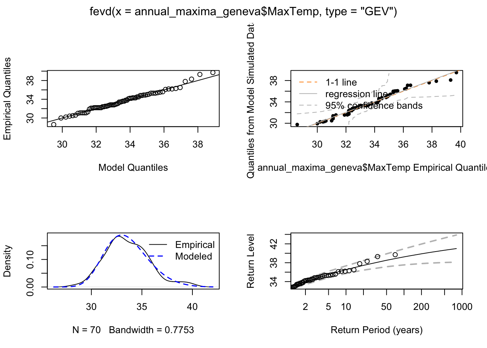
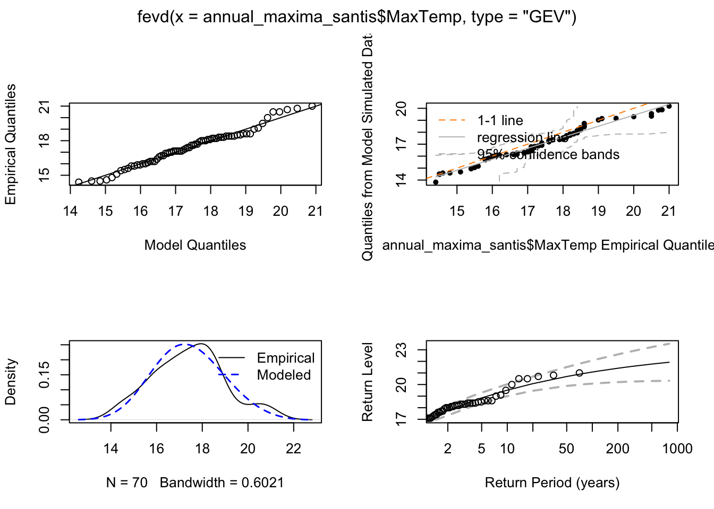
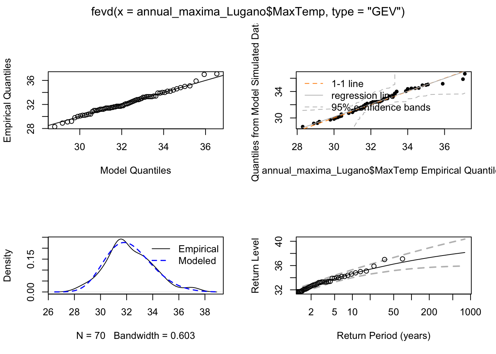
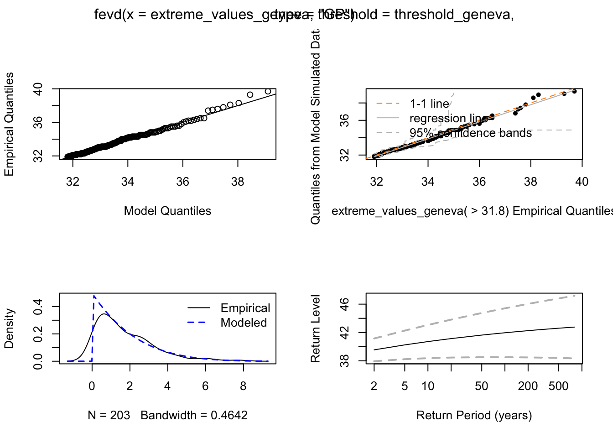

# load the required packages and install them if they are not.
source(here::here("code","setup.R"))
# Load the data
data_temp <- read.csv(here("data", "Cleaned_Stations_Data.csv"))
# Filter data for all cities and remove any rows with NA in TMAX
# Geneva
data_geneva <- data_temp %>%
filter(!is.na(TMAX)) %>%
filter(NAME == "Genève") %>%
dplyr::select(DATE, TMAX) %>%
mutate(DATE = as.Date(DATE))
# Santïs
data_santis <- data_temp %>%
filter(!is.na(TMAX)) %>%
filter(NAME == "Saentis") %>%
dplyr::select(DATE, TMAX) %>%
mutate(DATE = as.Date(DATE))
# Lugano
data_lugano <- data_temp %>%
filter(!is.na(TMAX)) %>%
filter(NAME == "Lugano") %>%
dplyr::select(DATE, TMAX) %>%
mutate(DATE = as.Date(DATE))Part 4: Comparing GEV and POT approaches
Data Loading and Preparation
We ensure that we have the necessary data for the analysis by filtering the temperature data for all three cities and removing any rows with missing values. We removed 395 rows.
Block Maxima Approach (GEV Distribution)
In this analysis, we investigate whether a Generalized Extreme Value (GEV) distribution can accurately model annual maximum temperatures in Switzerland. Additionally, we compare the results of the block Maxima approach with the Peaks-over-Threshold (POT) approach using declustering for extreme temperatures.
We calculate the annual maximum temperatures for Geneva, Santïs and Lugano and fit a GEV distribution to these maxima.
# Calculate annual maximum temperatures
# Geneva
annual_maxima_geneva <- data_geneva %>%
mutate(Year = year(DATE)) %>%
group_by(Year) %>%
summarize(MaxTemp = max(TMAX), .groups = 'drop')
# Santïs
annual_maxima_santis <- data_santis %>%
mutate(Year = year(DATE)) %>%
group_by(Year) %>%
summarize(MaxTemp = max(TMAX), .groups = 'drop')
# Lugano
annual_maxima_Lugano <- data_lugano %>%
mutate(Year = year(DATE)) %>%
group_by(Year) %>%
summarize(MaxTemp = max(TMAX), .groups = 'drop')# Fit a GEV distribution to the annual maxima
# Genève
gev_fit_geneva <- fevd(annual_maxima_geneva$MaxTemp, type = "GEV")
# Santïs
gev_fit_santis <- fevd(annual_maxima_santis$MaxTemp, type = "GEV")
# Lugano
gev_fit_Lugano <- fevd(annual_maxima_Lugano$MaxTemp, type = "GEV")# Diagnostic plots for the GEV fit
# Geneva
par(mfrow = c(2, 2))
plot(gev_fit_geneva)
# Santïs
par(mfrow = c(2, 2))
plot(gev_fit_santis)
# Lugano
par(mfrow = c(2, 2))
plot(gev_fit_Lugano)
We have here the diagnostic plots for the GEV fit, which include the quantile-quantile plot, the return level plot, the probability plot, and the density plot. We see that overal the fit is good.
# Calculate return levels for 10, 50, and 100-year return periods
# Genève
gev_return_levels_geneva <- return.level(gev_fit_geneva, return.period = c(10, 50, 100))
# Santïs
gev_return_levels_santis <- return.level(gev_fit_santis, return.period = c(10, 50, 100))
# Lugano
gev_return_levels_Lugano <- return.level(gev_fit_Lugano, return.period = c(10, 50, 100))Comparison with Peaks-over-Threshold Approach (GPD Distribution)
Peaks-over-Threshold Approach
# Filter the data for the summer months (June to September)
# Geneva
geneva_summer <- subset(data_geneva, format(DATE, "%m") %in% c("06", "07", "08", "09"))
# Santis
santis_summer <- subset(data_santis, format(DATE, "%m") %in% c("06", "07", "08", "09"))
# Lugano
lugano_summer <- subset(data_lugano, format(DATE, "%m") %in% c("06", "07", "08", "09"))# Define a threshold at the 95th percentile
# Geneva
threshold_geneva <- quantile(geneva_summer$TMAX, 0.95)
# Santïs
threshold_santis <- quantile(santis_summer$TMAX, 0.95)
# Lugano
threshold_lugano <- quantile(lugano_summer$TMAX, 0.95)# Number of exceedances over the threshold
# Geneva
num_exceedances_geneva <- sum(geneva_summer$TMAX > threshold_geneva)
# Santïs
num_exceedances_santis <- sum(santis_summer$TMAX > threshold_santis)
# Lugano
num_exceedances_Lugano <- sum(lugano_summer$TMAX > threshold_lugano)We now apply the Peaks-over-Threshold (POT) approach using a suitable threshold. With a 95% threshold, we have 413 exceedances over the threshold for Genève, 413 for Santïs, and 406 for Lugano.
# Decluster the data using the chosen threshold for each station
# Genava
geneva_declustered <- extRemes::decluster(geneva_summer$TMAX, threshold = threshold_geneva, run.length = 1)
# Santïs
santis_declustered <- extRemes::decluster(santis_summer$TMAX, threshold = threshold_santis, run.length = 1)
# Lugano
lugano_declustered <- extRemes::decluster(lugano_summer$TMAX, threshold = threshold_lugano, run.length = 1)# Add the declustered data to the corresponding datasets
# Geneva
geneva_summer$declustered <- ifelse(geneva_summer$TMAX >= threshold_geneva, geneva_declustered, NA)
# Santïs
santis_summer$declustered <- ifelse(santis_summer$TMAX >= threshold_santis, santis_declustered, NA)
# Lugano
lugano_summer$declustered <- ifelse(lugano_summer$TMAX >= threshold_lugano, lugano_declustered, NA)# Extract declustered extreme values
# Geneva
extreme_values_geneva <- geneva_summer[["declustered"]][!is.na(geneva_summer[["declustered"]])]
# Santïs
extreme_values_santis <- santis_summer[["declustered"]][!is.na(santis_summer[["declustered"]])]
# Lugano
extreme_values_lugano <- lugano_summer[["declustered"]][!is.na(lugano_summer[["declustered"]])]# Fit a GPD to the exceedances
# Genève
gpd_fit_geneva <- fevd(extreme_values_geneva, threshold = threshold_geneva, type = "GP")
# Santïs
gpd_fit_santis <- fevd(extreme_values_santis, threshold = threshold_santis, type = "GP")
# Lugano
gpd_fit_lugano <- fevd(extreme_values_lugano, threshold = threshold_lugano, type = "GP")# Diagnostic plots for the GPD fit
# Genève
par(mfrow = c(2, 2))
plot(gpd_fit_geneva)
# Santïs
par(mfrow = c(2, 2))
plot(gpd_fit_santis)
# Lugano
par(mfrow = c(2, 2))
plot(gpd_fit_lugano)Again, we have the diagnostic plots for the GPD fit, which include the quantile-quantile plot, the return level plot, the probability plot, and the density plot. We see that overal the fit is good.
# Calculate return levels for 10, 50, and 100-year return periods
# Geneva
gpd_return_levels_geneva <- return.level(gpd_fit_geneva, return.period = c(10, 50, 100))
# Santïs
gpd_return_levels_santis <- return.level(gpd_fit_santis, return.period = c(10, 50, 100))
# Lugano
gpd_return_levels_Lugano <- return.level(gpd_fit_lugano, return.period = c(10, 50, 100))Our results
Block Maxima Approach (GEV Distribution):
Parameter Estimates:
| Station | Elevation | location parameter | scale parameter | shape parameter |
|---|---|---|---|---|
| Geneva | 375m | 32.69 | 1.97 | -0.15 |
| Santïs | 2500m | 16.84 | 1.5 | -0.23 |
| Lugano | 275m | 31.51 | 1.65 | -0.17 |
GEV Return Levels:
| Station | Elevation | 10-year RL (°C) | 50-year RL (°C) | 100-year RL (°C) |
|---|---|---|---|---|
| Geneva | 375m | 36.45 | 38.51 | 39.23 |
| Santïs | 2500m | 19.47 | 20.69 | 21.08 |
| Lugano | 275m | 34.61 | 36.24 | 36.81 |
Peaks-over-Threshold Approach (GPD Distribution):
Threshold Selection:
The threshold was set at the 95th percentile, which is 31.8 degrees Celsius for Geneva
The threshold was set at the 95th percentile, which is 15 degrees Celsius for Santïs.
The threshold was set at the 95th percentile, which is 30.8 degrees Celsius for Lugano.
Number of Exceedances:
There are 413 exceedances over the threshold for Geneva.
There are 413 exceedances over the threshold for Santïs.
There are 406 exceedances over the threshold for Lugano.
GPD Return Levels:
The return levels are:
| Station | Elevation | 10-year RL (°C) | 50-year RL (°C) | 100-year RL (°C) |
|---|---|---|---|---|
| Geneva | 375m | 40.72 | 41.63 | 41.96 |
| Santïs | 2500m | 21.52 | 21.84 | 21.94 |
| Lugano | 275m | 39.88 | 42.01 | 42.95 |
Comparison of Approaches:
In comparing the block maxima approach (GEV) to the Peaks-over-Threshold approach (GPD) for modeling temperature extremes, we find that the POT method often provides more nuanced information about the tail behavior of the distribution. While the GEV model uses only the annual maximum values, which can lead to relatively large uncertainty due to a limited amount of extreme data, the POT approach utilizes all temperature values above a chosen high threshold. This generally results in more data points to characterize the tail, potentially yielding more stable and reliable estimates of parameters and return levels. However, the POT approach depends on careful threshold selection and declustering, which introduces additional steps not required by the simpler block maxima method. In practice, the POT approach can lead to different (often more precise) return level estimates, giving a potentially more accurate picture of the frequency and magnitude of extreme temperature events.